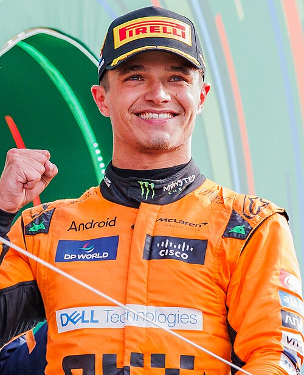

Semana de GP
 GP de Las Vegas
Neón violeta en el Strip
Faltan 5 días
GP de Las Vegas
Neón violeta en el Strip
Faltan 5 días

Lando Norris es un piloto de automovilismo británico que también posee la nacionalidad belga. Fue campeón del Campeonato Mundial de Karting en 2014, de la Eurocopa de Fórmula Renault, la Fórmula Renault NEC y la Toyota Racing Series en 2016, así como del Campeonato Europeo de Fórmula 3 de la FIA en 2017. En 2018 fue subcampeón del Campeonato de Fórmula 2 de la FIA, este último como miembro del Programa de Jóvenes Pilotos de Mc
Resumen biográfico: Wikipedia (CC BY-SA)
Ver McLaren →